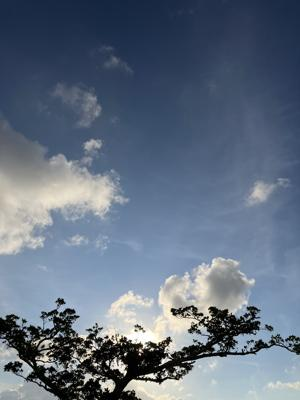
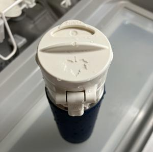

うるがいの話 ある日
最新: 仏壇じまいの後のナカビ【うるがいの話 ある日】とは 一日だけのプログです
『うるがいの話』の最新一日だけのプログで、通信料が少なく経済的だ。カニの画像をクリックすると全ての日付が載る『うるがいの話』サイトを表示します
|
|
【うるがいの話】 うるがい(ｳﾙｶﾞｲ urugai)とは、『もずくがに』の名前でとても大きくなります。 |
|---|---|
|
|
【カミマヤーの話】 猫のことを方言でマヤーといいます。カミマヤー（kamimayaa）とは、神の猫のことです。 |
|
【たながぁの音楽】 たながぁ（ﾀﾅｶﾞｰ tanagaa）とは手長えびのことで、何種類かあり大きいのは車 エビぐらいになります。 |

|
【ぶながぁの話】 ぶながぁ(ﾌﾞﾅｶﾞｰ bunagaa)とは、赤い髪の毛、赤い身体、そして身長は１ｍ２０ｃｍ ぐらい、川の蟹を食べているの目撃された。場所は沖縄県国頭郡大宜味村のと ある村僕の隣近所に住んでいる爺さんから、聞いた話です。 |
|
|
【ギーマの話】 ギーマ(giima)とは、山原の里山に咲くスズランに似た、 花を付けます。実は食べられます、 気が付くと口の周りが紫になっています。 |
2025年09月05日 (金）仏壇じまいの後のナカビ
15:17

納骨堂に生けた花の花瓶に水を入れてなかった、明日、行かない
といけないと言われ、中日の今日もお寺へ行く。花は見事に枯れ
ていた。ところでお茶を入れている水筒の蓋の開け方で、苦労す
る。確かこれは、元ワンダーフォーゲル部だった私が、買ってき
たものだが。ネットで調べたらロゴス（ＬＯＧＯＳ）というメー
カーの水筒だった。が、開け方はネットで探すことは出来なかっ
た。ま、蓋を外せばお茶はでるので。明日花を買わないで済むよ
う（今日花を買った）、花瓶は、水を入れた。ウンケーの昨日は
納骨堂は、訪れる人で混んでいたが今日は誰もいなかった。来年
は、ウンケーでウークイも済ませるのだろう。一日で法要を済ま
せる『繰り込み初七日法要』と同じく。

この前から補聴器をつけてますよ、と叔母さんに話すと誰々さん
も付けたけど頭が痛くなってやめたと言っていた、１０万もする
のに・・・・。突っ込まなかったッス、話しても理解しそうにな
いので。